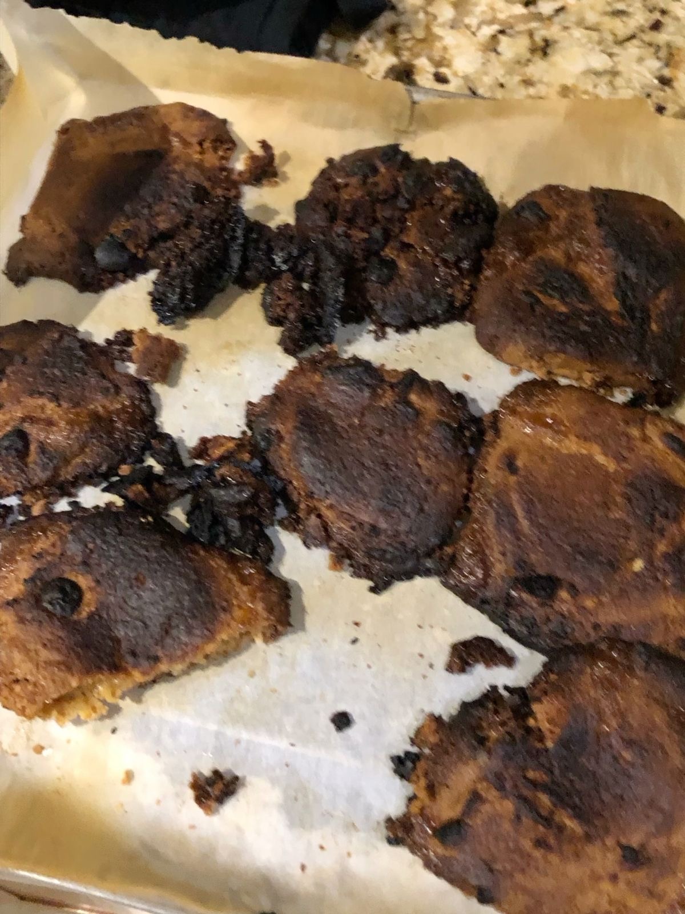

Twenty minutes later, something smelled… suspicious.
I slowly opened the oven and looked inside. Instead of golden, fluffy muffins, I saw something much darker. Very dark. My muffins had transformed into small burnt rocks. At that moment I realized something very important: baking is not as easy as it looks.

Even though my first muffins were a complete disaster, I couldnt stop laughing.
It wasnt perfect, but it was my very first baking adventure.
Next time I will watch the oven more carefully and maybe read the recipe twice.
One thing is certain my muffin journey has only just begun.

1. Even though my first muffins were a failure, I didnt want to give up. A real baker doesnt quit after one disaster right?
So one week later, I decided to try again.
This time, I was different.
More experienced.
More careful
2. I read the recipe slowly. Twice.
I measured everything correctly.
No extra confidence. Only focus.
I smashed the bananas again, added the egg, mixed the oat flour, and this time the batter actually looked normal. Not like a science experiment. Not like cement. Just batter.
When I put the tray into the oven, I did not leave the kitchen. I stood there watching like a security guard protecting something very important.
Ten minutes passed.
Fifteen minutes passed.
Twenty minutes passed.
The smell came again
but this time it was sweet. Warm. Perfect.
I opened the oven carefully, almost scared to look inside.
3. And there they were.
Golden.
Soft.
Beautiful muffins.
I couldnt believe it. I actually did it. After my first disaster, my second muffin adventure was a success. I took one, waited a little so I wouldnt burn my tongue, and tried it.
It was warm, soft, and a little messy but it tasted like victory.
From that day, I learned two things
First, baking needs patience.
Second, never trust your confidence more than the recipe.
And that is how my muffin journey officially became successful but also a little dangerous.